PROJECT ARCHIVE
AI激励-海豹上岸游记
从角色设定到多端互动，构建可持续扩展的 IP 体验系统
手机/Pad展示：
场景适配
01
/
06
正在召唤小海豹 0%
海豹动作：
01
以海豹IP为起点，
构建可漫游体验世界
打造可视激励。
从角色设定延展到六组场景、两端体验与互动动作，让所有资产共同服务于同一套世界观。
- 角色动作
- 10+
- 主题场景
- 06
- 展示终端
- 02

从主视觉出发，
让角色持续演绎。
固定轮廓、比例与表情语言，再以多组动作延展角色的情绪、剧情与传播能力。
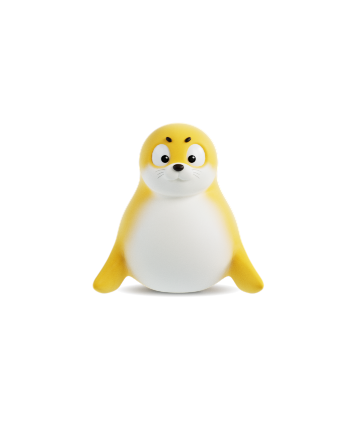
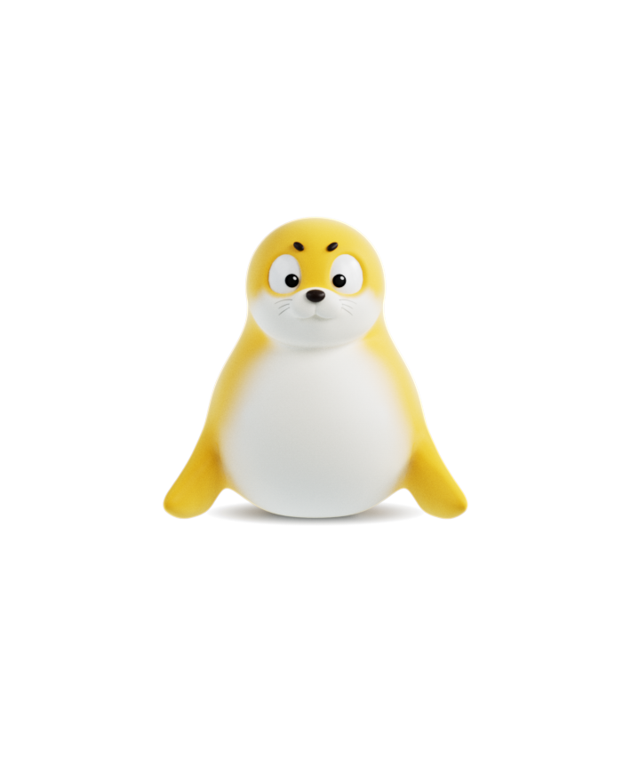
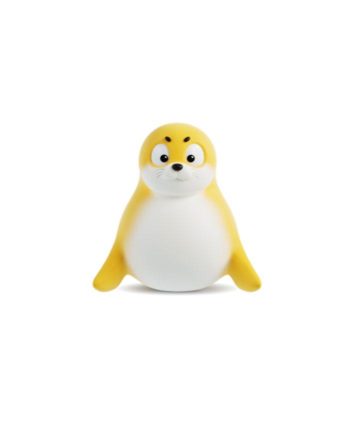
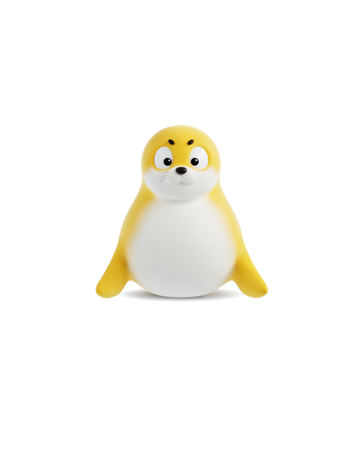
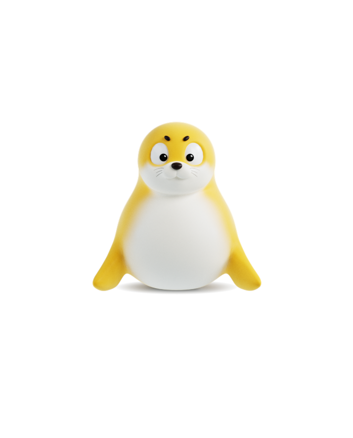
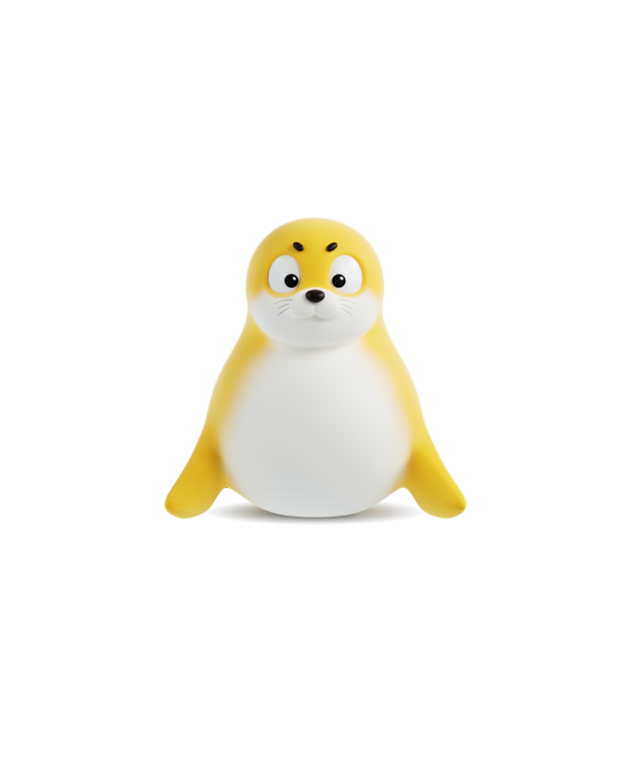
六阶里程，远海驶向岸边
统一视觉体系下，载具逐次升级、距离不断拉近，用场景进阶标记每一段突破
场景提示词结构风格种子 / 主体 / 环境 / 构图 / 光影
激励延伸，热点跟随
促新人留存，扩充动作资源
海豹舞蹈探索，舞台主题设定
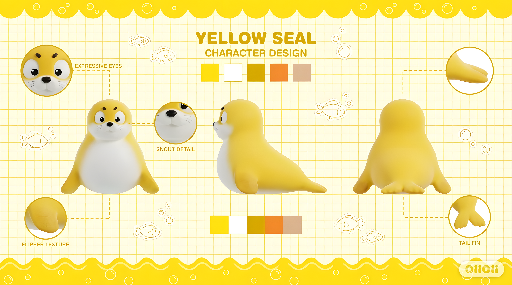
舞蹈内容落地提供剧本与纯文本提示两种实现路径。剧本在生成稳定性与动作连贯性上表现突出，可依托海豹 IP 性格与剧情设定，完成系统化动作编排，但难以适配快节奏舞蹈场景——节奏提速会直接造成细节损耗，过度顺滑的动作衔接，反而成为表现短板。
纯文本提示对创作精度要求极高，且单条提示词在视频生成中的权重无法直观判定，经多轮迭代测试，最终沉淀最优提示词框架：镜头 + 主体 + 环境 + 动作 + 动作特点 + 音乐节奏。

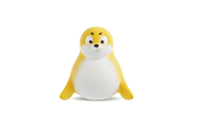
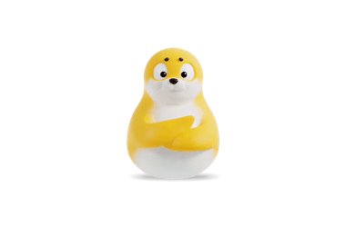
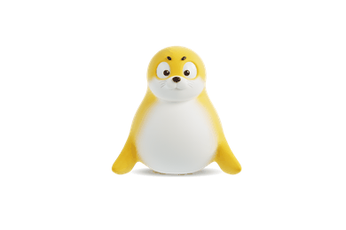
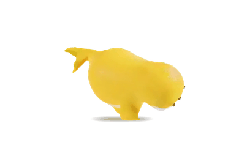
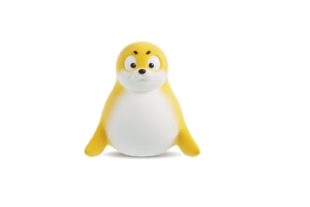
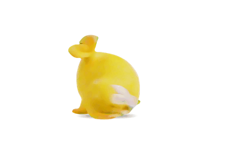